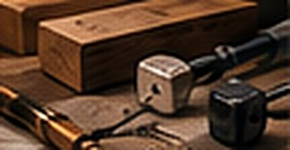
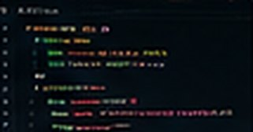
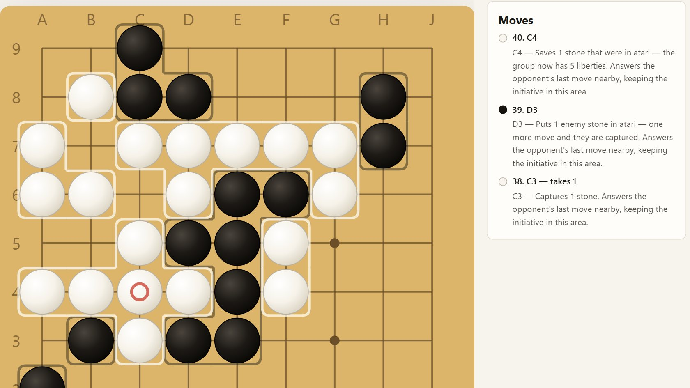

Live capture · stars.xaminisalamini.com
Live capture · stars.xaminisalamini.com
Featured
STARS
Fly through the real galaxy — 123,000 stars at their true 3D positions, with instruments no planetarium ships: measurement tethers, closure rates, deep-time scrubbing.
01 03
Explore Projects by Type
View all projects- Draft Games & AI Arenas Play them, or watch the bots 3 projects
-
Live
Astronomy & Exploration
Instruments for the night sky
1 project
-

Draft Woodworking Drawings, builds, and shop work Coming from the shop -

Draft Software & Tools Clone, build, or download Nothing published yet
Selected Work
Working instruments and game arenas — open them and try them.
-
Live capture
STARS
Fly through the real galaxy — stars at their true 3D positions, with instruments no planetarium ships: measurement tethers, closure rates, deep-time scrubbing.
-

Live captureBaduk
A playspace for learning Go — play people or bots at four levels, with a coach that explains every move and the reasoning behind it.
-
Draft image · concept art
Monopoly Arena
A full rules engine and animated board for pitting AI bots against each other — watch strategies buy, build and bankrupt, or train new ones.
-
Image awaiting approvalSource is private — nothing is drawn from it without approval (D-22)
Risk
Description to come. It will be written only from material Michael approves for publication.
Live link pending approvalSource private